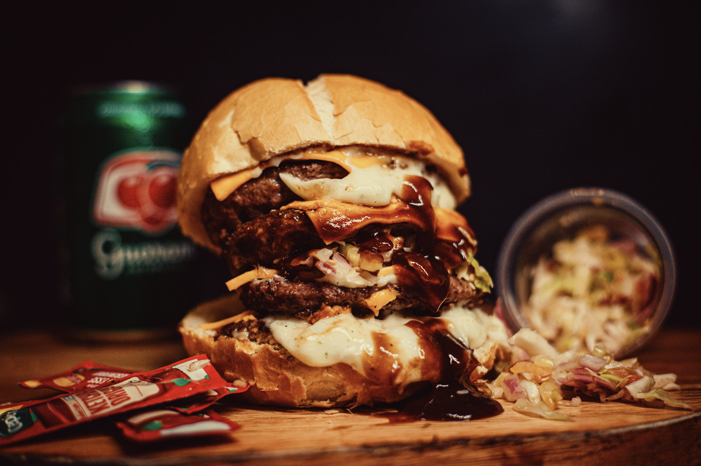
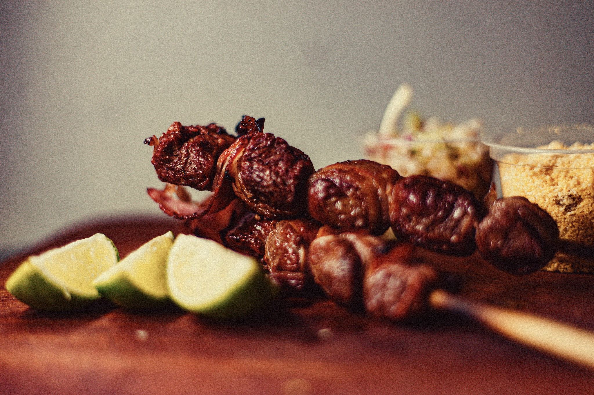

2010
Fábrica


Nossa História
De uma loja
De uma loja
a uma indústria
completa
A Chico Grill Indústria nasceu da necessidade de manter o mesmo padrão de sabor em todas as unidades da rede. Hoje somos a base que sustenta mais de 40 lojas em São Paulo, com produção própria de hambúrgueres, espetos, embutidos, molhos e pães.
Investimos em estrutura, controle de qualidade e logística própria para garantir que cada produto chegue às unidades com a mesma qualidade do primeiro dia, do recebimento da matéria-prima até a expedição final.
Rastreabilidade Total
Cada lote acompanhado de ponta a ponta
Produção em Escala
Padrão artesanal mantido em grande volume
Logística Própria
Distribuição diária com cadeia de frio
0+
Unidades abastecidas
0+
Colaboradores
0t
Produzidas por mês